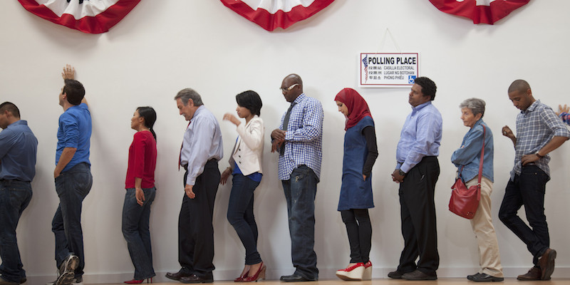
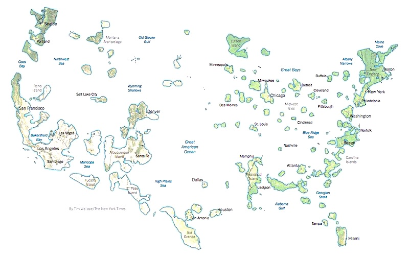

2017-02-08 08:00

The Electoral College, like it or not, is how presidents are elected. It may be an anachronism, it may be an exception to the way all other elections work in the United States, and it may be an exception to the way political leaders are chosen in any other democracy, but it’s what the U.S. Constitution requires. And it’s not likely to change without a Constitutional convention – even though most Americans hate it. Two-thirds of us, in fact. Or 70%, depending on whom you ask.
Anyone who has driven across this vast country knows that dense urban areas – where the majority of Americans actually live – are quite different, demographically and politically, from more sparsely-settled regions. Clinton won in what some are calling urban archipelagos, and she won the popular vote by an almost three million vote plurality – the second time in sixteen years the Electoral College has subverted direct democracy.

Supporters of the Electoral College usually blame it on James Madison. But Madison thought the people at large were more qualified to choose an Executive. Detractors of the system point out that the Electoral College was a compromise with slave states – several with more slaves than owners – concerned they would always have fewer popular votes than other state at a time when slaves were property, not people, and definitely not voters.
But the fact is – today’s American population is overwhelmingly urban. Almost 80% in 2000, and 81% in 2010 live in urban areas. And as we become even more urban, the Electoral College will increasingly subvert democratic selection of a president. The Electoral College’s “winner takes all” mechanism leads to voter disenfranchisement. The system also gives a mathematical advantage to rural (white) America, which in turn creates institutional disenfranchisement of minority voters. The Electoral College is based on the odd principle that states – not the people themselves – are vested with the right to choose a president. And, increasingly, it’s a small number of states, with disproportionate focus on rural white America, that decide the presidency.
Some say the system is a stabilizing force for democracy – but if this is so then why was it not proposed for all elections? Once vocal critics of the institution, Republicans since 2000 have become converts to the Electoral College and often say that voters are a mob from which democracy needs to be protected – although we certainly weren’t spared from demagoguery this time around. Libertarians are more skeptical – your vote doesn’t count anyway, so why worry? In fact, one suggests, let’s just formalize this lunacy by abolishing the popular vote.
Meanwhile, Liberals have been trying to come up with ways to tweak a broken system. The National Popular Vote bill is one such workaround that creates a compact between states that holds all accountable to awarding the vote to the winner of the popular vote. But Republicans have been hostile to the idea since it dawned on them the system was rigged in their favor. Here in New England, Massachusetts joined the compact in 2010, followed by Vermont in 2011, with Rhode Island following suit in 2013. Maine, our beautiful but occasionally mad neighbor, ratified the compact in the Senate but defeated it in the state House two years later. Check to see the status in your state.
But this doesn’t really fix the underlying problem. The U.S. Constitution still has one more major birth defect affecting elections – one that must be corrected. Although change seems more unlikely than ever, it’s the only way to make presidential votes count. And patience may be required. The 27th Amendment didn’t immediately make it into the Bill of Rights, and it took 202 years to ratify.
With pressure, it works. Over the years Constitutional amendments have fixed a number of election problems. The 12th Amendment was the nation’s first fix to the Electoral College; it completely replaced rules which used a type of ranked voting. The 15th Amendment gave former slaves the vote. The 17th Amendment replaced the appointment of Senators with the popular vote. The 19th Amendment gave women the vote. The 23rd Amendment added the District of Columbia to the Electoral College. The 24th Amendment abolished poll taxes. The 26th Amendment gave younger adults the right to vote. With all these changes, an elite slaveholder version of “democracy” was slowly transformed into one that includes nearly all of us.
And with one more refinement, a vote for president could be something that truly counts.